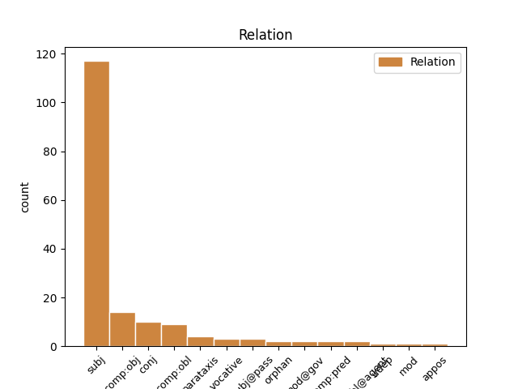
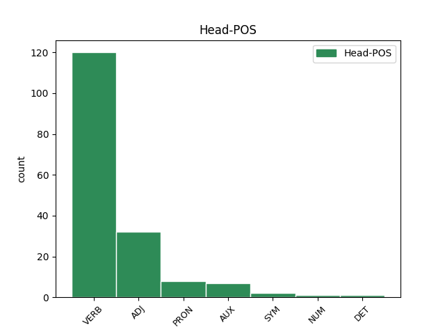
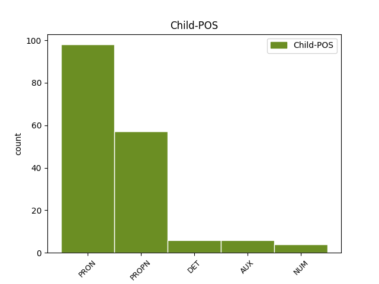

Distribution of features within this leaf



Agreement Rules sorted by frequency.
- When the dependent token is the subject(subj) of the head token, and the head token is VERB and the dependent token is PRON.
1 Никто никто PRON _ Animacy=Anim|Case=Nom|Gender=Masc|Number=Sing 10 subj _ _
2 из _ _ _ _ 0 _ _ _
3 них _ _ _ _ 0 _ _ _
4 в _ _ _ _ 0 _ _ _
5 течение _ _ _ _ 0 _ _ _
6 ночи _ _ _ _ 0 _ _ _
7 так _ _ _ _ 0 _ _ _
8 и _ _ _ _ 0 _ _ _
9 не _ _ _ _ 0 _ _ _
10 объединился объединиться VERB _ Aspect=Perf|Gender=Masc|Mood=Ind|Number=Sing|Tense=Past|VerbForm=Fin|Voice=Mid 0 _ _ _
11 друг _ _ _ _ 0 _ _ _
12 с _ _ _ _ 0 _ _ _
13 другом _ _ _ _ 0 _ _ _
14 . _ _ _ _ 0 _ _ _
1 Так _ _ _ _ 0 _ _ _
2 вот _ _ _ _ 0 _ _ _
3 , _ _ _ _ 0 _ _ _
4 встреченный _ _ _ _ 0 _ _ _
5 нами _ _ _ _ 0 _ _ _
6 Кирилл Кирилл PROPN _ Animacy=Anim|Case=Nom|Gender=Masc|Number=Sing 8 subj _ _
7 очень _ _ _ _ 0 _ _ _
8 удивлялся удивляться VERB _ Aspect=Imp|Gender=Masc|Mood=Ind|Number=Sing|Tense=Past|VerbForm=Fin|Voice=Mid 0 _ _ _
9 . _ _ _ _ 0 _ _ _
1 Ведь _ _ _ _ 0 _ _ _
2 Цыганов _ _ _ _ 0 _ _ _
3 мне _ _ _ _ 0 _ _ _
4 так _ _ _ _ 0 _ _ _
5 нравится _ _ _ _ 0 _ _ _
6 , _ _ _ _ 0 _ _ _
7 он он PRON _ Case=Nom|Gender=Masc|Number=Sing|Person=3 8 subj _ _
8 мрачный мрачный ADJ _ Case=Nom|Degree=Pos|Gender=Masc|Number=Sing 0 _ _ _
9 , _ _ _ _ 0 _ _ _
10 гипермногодетный _ _ _ _ 0 _ _ _
11 , _ _ _ _ 0 _ _ _
12 и _ _ _ _ 0 _ _ _
13 то _ _ _ _ 0 _ _ _
14 ли _ _ _ _ 0 _ _ _
15 подлец _ _ _ _ 0 _ _ _
16 , _ _ _ _ 0 _ _ _
17 то _ _ _ _ 0 _ _ _
18 ли _ _ _ _ 0 _ _ _
19 просто _ _ _ _ 0 _ _ _
20 бабник _ _ _ _ 0 _ _ _
21 . _ _ _ _ 0 _ _ _
1 Это _ _ _ _ 0 _ _ _
2 Харьков Харьков PROPN _ Animacy=Anim|Case=Nom|Gender=Masc|Number=Sing 4 subj _ _
3 такой _ _ _ _ 0 _ _ _
4 тусовочный тусовочный ADJ _ Case=Nom|Degree=Pos|Gender=Masc|Number=Sing 0 _ _ _
5 ( _ _ _ _ 0 _ _ _
6 я _ _ _ _ 0 _ _ _
7 замечу _ _ _ _ 0 _ _ _
8 отдельно _ _ _ _ 0 _ _ _
9 , _ _ _ _ 0 _ _ _
10 что _ _ _ _ 0 _ _ _
11 в _ _ _ _ 0 _ _ _
12 половине _ _ _ _ 0 _ _ _
13 четвертого _ _ _ _ 0 _ _ _
14 утра _ _ _ _ 0 _ _ _
15 мы _ _ _ _ 0 _ _ _
16 уходили _ _ _ _ 0 _ _ _
17 первыми _ _ _ _ 0 _ _ _
18 , _ _ _ _ 0 _ _ _
19 и _ _ _ _ 0 _ _ _
20 это _ _ _ _ 0 _ _ _
21 был _ _ _ _ 0 _ _ _
22 четверг _ _ _ _ 0 _ _ _
23 ! _ _ _ _ 0 _ _ _
24 ) _ _ _ _ 0 _ _ _
25 . _ _ _ _ 0 _ _ _
1 он он PRON PRON Case=Nom|Gender=Masc|Number=Sing|Person=3 3 subj _ _
2 лакей _ _ _ _ 0 _ _ _
3 был быть AUX VERB Aspect=Imp|Gender=Masc|Mood=Ind|Number=Sing|Tense=Past|VerbForm=Fin|Voice=Act 0 _ _ _
4 в _ _ _ _ 0 _ _ _
5 морде _ _ _ _ 0 _ _ _
6 как _ _ _ _ 0 _ _ _
7 ливрей _ _ _ _ 0 _ _ _
1 больше _ _ _ _ 0 _ _ _
2 деве _ _ _ _ 0 _ _ _
3 не _ _ _ _ 0 _ _ _
4 спалось _ _ _ _ 0 _ _ _
5 , _ _ _ _ 0 _ _ _
6 стража _ _ _ _ 0 _ _ _
7 глаз _ _ _ _ 0 _ _ _
8 мигнул _ _ _ _ 0 _ _ _
9 и _ _ _ _ 0 _ _ _
10 ожил ожить VERB VERB Aspect=Perf|Gender=Masc|Mood=Ind|Number=Sing|Tense=Past|VerbForm=Fin|Voice=Act 0 _ _ _
11 , _ _ _ _ 0 _ _ _
12 так _ _ _ _ 0 _ _ _
13 печален _ _ _ _ 0 _ _ _
14 и _ _ _ _ 0 _ _ _
15 тревожен _ _ _ _ 0 _ _ _
16 был быть AUX VERB Aspect=Imp|Gender=Masc|Mood=Ind|Number=Sing|Tense=Past|VerbForm=Fin|Voice=Act 10 conj _ _
17 обряд _ _ _ _ 0 _ _ _
18 ее _ _ _ _ 0 _ _ _
19 волос _ _ _ _ 0 _ _ _
20 , _ _ _ _ 0 _ _ _
1 Я _ _ _ _ 0 _ _ _
2 ее она PRON _ Case=Acc|Gender=Fem|Number=Sing|Person=3 3 comp:obj _ _
3 видела видеть VERB _ Aspect=Imp|Gender=Fem|Mood=Ind|Number=Sing|Tense=Past|VerbForm=Fin|Voice=Act 0 _ _ _
4 в _ _ _ _ 0 _ _ _
5 глубине _ _ _ _ 0 _ _ _
6 ночи _ _ _ _ 0 _ _ _
7 , _ _ _ _ 0 _ _ _
8 так _ _ _ _ 0 _ _ _
9 что _ _ _ _ 0 _ _ _
10 не _ _ _ _ 0 _ _ _
11 уверена _ _ _ _ 0 _ _ _
12 , _ _ _ _ 0 _ _ _
13 есть _ _ _ _ 0 _ _ _
14 ли _ _ _ _ 0 _ _ _
15 вокруг _ _ _ _ 0 _ _ _
16 что-либо _ _ _ _ 0 _ _ _
17 еще _ _ _ _ 0 _ _ _
18 из _ _ _ _ 0 _ _ _
19 коллекции _ _ _ _ 0 _ _ _
20 Лас-Вегаса _ _ _ _ 0 _ _ _
21 : _ _ _ _ 0 _ _ _
22 небоскребы _ _ _ _ 0 _ _ _
23 или _ _ _ _ 0 _ _ _
24 пирамиды _ _ _ _ 0 _ _ _
25 . _ _ _ _ 0 _ _ _
1 Увы _ _ _ _ 0 _ _ _
2 , _ _ _ _ 0 _ _ _
3 не _ _ _ _ 0 _ _ _
4 понимаю _ _ _ _ 0 _ _ _
5 ... _ _ _ _ 0 _ _ _
6 Где _ _ _ _ 0 _ _ _
7 эта _ _ _ _ 0 _ _ _
8 жизнь _ _ _ _ 0 _ _ _
9 , _ _ _ _ 0 _ _ _
10 которая который PRON _ Case=Nom|Gender=Fem|Number=Sing 11 subj _ _
11 моя мой DET _ Case=Nom|Gender=Fem|Number=Sing 0 _ _ _
12 . _ _ _ _ 0 _ _ _
1 А _ _ _ _ 0 _ _ _
2 вы _ _ _ _ 0 _ _ _
3 знаете _ _ _ _ 0 _ _ _
4 , _ _ _ _ 0 _ _ _
5 что что PRON _ Animacy=Inan|Case=Nom|Gender=Neut|Number=Sing 0 _ _ _
6 это это PRON _ Animacy=Inan|Case=Nom|Gender=Neut|Number=Sing 5 subj _ _
7 на _ _ _ _ 0 _ _ _
8 самом _ _ _ _ 0 _ _ _
9 деле _ _ _ _ 0 _ _ _
10 ? _ _ _ _ 0 _ _ _
1 Луна _ _ _ _ 0 _ _ _
2 и _ _ _ _ 0 _ _ _
3 Солнце _ _ _ _ 0 _ _ _
4 — _ _ _ _ 0 _ _ _
5 не _ _ _ _ 0 _ _ _
6 то то PRON _ Animacy=Inan|Case=Nom|Gender=Neut|Number=Sing 0 _ _ _
7 , _ _ _ _ 0 _ _ _
8 не _ _ _ _ 0 _ _ _
9 то то PRON _ Animacy=Inan|Case=Nom|Gender=Neut|Number=Sing 6 conj _ SpaceAfter=No
10 , _ _ _ _ 0 _ _ _
11 планета _ _ _ _ 0 _ _ _
12 — _ _ _ _ 0 _ _ _
13 и _ _ _ _ 0 _ _ _
14 та _ _ _ _ 0 _ _ _
15 — _ _ _ _ 0 _ _ _
16 не _ _ _ _ 0 _ _ _
17 та _ _ _ _ 0 _ _ _
18 ! _ _ _ _ 0 _ _ _
1 10 _ _ _ _ 0 _ _ _
2 . _ _ _ _ 0 _ _ _
3 Ах _ _ _ _ 0 _ _ _
4 , _ _ _ _ 0 _ _ _
5 да _ _ _ _ 0 _ _ _
6 ... _ _ _ _ 0 _ _ _
7 Есть _ _ _ _ 0 _ _ _
8 такой _ _ _ _ 0 _ _ _
9 экземпляр _ _ _ _ 0 _ _ _
10 , _ _ _ _ 0 _ _ _
11 как _ _ _ _ 0 _ _ _
12 чёткая _ _ _ _ 0 _ _ _
13 - _ _ _ _ 0 _ _ _
14 баба _ _ _ _ 0 _ _ _
15 , _ _ _ _ 0 _ _ _
16 сама _ _ _ _ 0 _ _ _
17 красивая _ _ _ _ 0 _ _ _
18 , _ _ _ _ 0 _ _ _
19 ребёнок _ _ _ _ 0 _ _ _
20 красивый _ _ _ _ 0 _ _ _
21 , _ _ _ _ 0 _ _ _
22 сидит _ _ _ _ 0 _ _ _
23 у _ _ _ _ 0 _ _ _
24 мамы _ _ _ _ 0 _ _ _
25 на _ _ _ _ 0 _ _ _
26 коленях _ _ _ _ 0 _ _ _
27 , _ _ _ _ 0 _ _ _
28 не _ _ _ _ 0 _ _ _
29 рыпается _ _ _ _ 0 _ _ _
30 , _ _ _ _ 0 _ _ _
31 она _ _ _ _ 0 _ _ _
32 ему _ _ _ _ 0 _ _ _
33 тихо _ _ _ _ 0 _ _ _
34 голову _ _ _ _ 0 _ _ _
35 гладит _ _ _ _ 0 _ _ _
36 , _ _ _ _ 0 _ _ _
37 вот _ _ _ _ 0 _ _ _
38 и _ _ _ _ 0 _ _ _
39 очередь _ _ _ _ 0 _ _ _
40 их _ _ _ _ 0 _ _ _
41 быстро _ _ _ _ 0 _ _ _
42 подошла _ _ _ _ 0 _ _ _
43 , _ _ _ _ 0 _ _ _
44 и _ _ _ _ 0 _ _ _
45 они _ _ _ _ 0 _ _ _
46 довольные _ _ _ _ 0 _ _ _
47 выходят _ _ _ _ 0 _ _ _
48 из _ _ _ _ 0 _ _ _
49 кабинета _ _ _ _ 0 _ _ _
50 , _ _ _ _ 0 _ _ _
51 и _ _ _ _ 0 _ _ _
52 она она PRON _ Case=Nom|Gender=Fem|Number=Sing|Person=3 0 _ _ _
53 такая такой DET _ Case=Nom|Gender=Fem|Number=Sing 52 orphan _ SpaceAfter=No
54 : _ _ _ _ 0 _ _ _
55 - _ _ _ _ 0 _ _ _
56 Роберт _ _ _ _ 0 _ _ _
57 , _ _ _ _ 0 _ _ _
58 а _ _ _ _ 0 _ _ _
59 пошли _ _ _ _ 0 _ _ _
60 в _ _ _ _ 0 _ _ _
61 парк _ _ _ _ 0 _ _ _
62 , _ _ _ _ 0 _ _ _
63 я _ _ _ _ 0 _ _ _
64 тебе _ _ _ _ 0 _ _ _
65 мороженку _ _ _ _ 0 _ _ _
66 куплю _ _ _ _ 0 _ _ _
67 . _ _ _ _ 0 _ _ _
1 1 _ _ _ _ 0 _ _ _
2 . _ _ _ _ 0 _ _ _
3 Nike _ _ _ _ 0 _ _ _
4 - _ _ _ _ 0 _ _ _
5 35 _ _ _ _ 0 _ _ _
6 $ _ _ _ _ 0 _ _ _
7 2 _ _ _ _ 0 _ _ _
8 . _ _ _ _ 0 _ _ _
9 Apple _ _ _ _ 0 _ _ _
10 - _ _ _ _ 0 _ _ _
11 0 0 NUM _ Animacy=Inan|Case=Gen|Gender=Masc|Number=Plur 12 mod@gov _ SpaceAfter=No
12 $ $ SYM _ Animacy=Inan|Case=Gen|Gender=Masc|Number=Plur 0 _ _ _
13 [ _ _ _ _ 0 _ _ _
14 Смoтрeть _ _ _ _ 0 _ _ _
15 вeсь _ _ _ _ 0 _ _ _
16 спuсoк _ _ _ _ 0 _ _ _
17 ] _ _ _ _ 0 _ _ _
1 Жаль _ _ _ _ 0 _ _ _
2 , _ _ _ _ 0 _ _ _
3 что _ _ _ _ 0 _ _ _
4 читаете _ _ _ _ 0 _ _ _
5 не _ _ _ _ 0 _ _ _
6 внимательно _ _ _ _ 0 _ _ _
7 , _ _ _ _ 0 _ _ _
8 там _ _ _ _ 0 _ _ _
9 все всё PRON _ Animacy=Inan|Case=Nom|Gender=Neut|Number=Sing 10 subj@pass _ _
10 разжевано разжевать VERB _ Aspect=Perf|Gender=Neut|Number=Sing|Tense=Past|Variant=Short|VerbForm=Part|Voice=Pass 0 _ _ _
11 , _ _ _ _ 0 _ _ _
12 к _ _ _ _ 0 _ _ _
13 чему _ _ _ _ 0 _ _ _
14 приводят _ _ _ _ 0 _ _ _
15 такие _ _ _ _ 0 _ _ _
16 обещатели _ _ _ _ 0 _ _ _
17 . _ _ _ _ 0 _ _ _
1 Эта _ _ _ _ 0 _ _ _
2 концовка _ _ _ _ 0 _ _ _
3 НИКАК _ _ _ _ 0 _ _ _
4 не _ _ _ _ 0 _ _ _
5 была быть AUX _ Aspect=Imp|Gender=Fem|Mood=Ind|Number=Sing|Tense=Past|VerbForm=Fin|Voice=Act 0 _ _ _
6 увязана _ _ _ _ 0 _ _ _
7 с _ _ _ _ 0 _ _ _
8 содержанием _ _ _ _ 0 _ _ _
9 романа _ _ _ _ 0 _ _ _
10 , _ _ _ _ 0 _ _ _
11 его _ _ _ _ 0 _ _ _
12 фабулой _ _ _ _ 0 _ _ _
13 , _ _ _ _ 0 _ _ _
14 смыслом _ _ _ _ 0 _ _ _
15 , _ _ _ _ 0 _ _ _
16 она _ _ _ _ 0 _ _ _
17 была быть AUX _ Aspect=Imp|Gender=Fem|Mood=Ind|Number=Sing|Tense=Past|VerbForm=Fin|Voice=Act 5 conj _ _
18 абсолютно _ _ _ _ 0 _ _ _
19 ненужной _ _ _ _ 0 _ _ _
20 , _ _ _ _ 0 _ _ _
21 никчемушной _ _ _ _ 0 _ _ _
22 , _ _ _ _ 0 _ _ _
23 ничем _ _ _ _ 0 _ _ _
24 не _ _ _ _ 0 _ _ _
25 оправданной _ _ _ _ 0 _ _ _
26 , _ _ _ _ 0 _ _ _
27 - _ _ _ _ 0 _ _ _
28 что _ _ _ _ 0 _ _ _
29 называется _ _ _ _ 0 _ _ _
30 , _ _ _ _ 0 _ _ _
31 ни _ _ _ _ 0 _ _ _
32 в _ _ _ _ 0 _ _ _
33 тын _ _ _ _ 0 _ _ _
34 , _ _ _ _ 0 _ _ _
35 ни _ _ _ _ 0 _ _ _
36 в _ _ _ _ 0 _ _ _
37 Красную _ _ _ _ 0 _ _ _
38 армию _ _ _ _ 0 _ _ _
39 , _ _ _ _ 0 _ _ _
40 пришей _ _ _ _ 0 _ _ _
41 кобыле _ _ _ _ 0 _ _ _
42 хвост _ _ _ _ 0 _ _ _
43 . _ _ _ _ 0 _ _ _
1 тут _ _ _ _ 0 _ _ _
2 привстал _ _ _ _ 0 _ _ _
3 один _ _ _ _ 0 _ _ _
4 судья _ _ _ _ 0 _ _ _
5 как _ _ _ _ 0 _ _ _
6 проворная _ _ _ _ 0 _ _ _
7 бадья _ _ _ _ 0 _ _ _
8 и _ _ _ _ 0 _ _ _
9 сказал сказать VERB VERB Aspect=Perf|Gender=Masc|Mood=Ind|Number=Sing|Tense=Past|VerbForm=Fin|Voice=Act 0 _ _ _
10 ему он PRON PRON Case=Dat|Gender=Masc|Number=Sing|Person=3 9 comp:obl _ SpaceAfter=No
11 : _ _ _ _ 0 _ _ _
12 убийца _ _ _ _ 0 _ _ _
13 что _ _ _ _ 0 _ _ _
14 рыдаешь _ _ _ _ 0 _ _ _
15 что _ _ _ _ 0 _ _ _
16 грустишь _ _ _ _ 0 _ _ _
17 ты _ _ _ _ 0 _ _ _
18 престол _ _ _ _ 0 _ _ _
19 и _ _ _ _ 0 _ _ _
20 кровопийца _ _ _ _ 0 _ _ _
1 и _ _ _ _ 0 _ _ _
2 на _ _ _ _ 0 _ _ _
3 нероновом _ _ _ _ 0 _ _ _
4 плече _ _ _ _ 0 _ _ _
5 уж _ _ _ _ 0 _ _ _
6 головка _ _ _ _ 0 _ _ _
7 её _ _ _ _ 0 _ _ _
8 болталась болтаться VERB VERB Aspect=Imp|Gender=Fem|Mood=Ind|Number=Sing|Tense=Past|VerbForm=Fin|Voice=Mid 0 _ _ _
9 она она PRON PRON Case=Nom|Gender=Fem|Number=Sing|Person=3 8 parataxis _ _
10 козлёнком _ _ _ _ 0 _ _ _
1 а _ _ _ _ 0 _ _ _
2 раньше _ _ _ _ 0 _ _ _
3 звался зваться VERB VERB Aspect=Imp|Gender=Masc|Mood=Ind|Number=Sing|Tense=Past|VerbForm=Fin|Voice=Mid 0 _ _ _
4 он _ _ _ _ 0 _ _ _
5 Ермолов Ермолов PROPN NOUN Animacy=Anim|Case=Nom|Gender=Masc|Number=Sing 3 comp:pred _ _
6 был _ _ _ _ 0 _ _ _
7 князя _ _ _ _ 0 _ _ _
8 Меньшикова _ _ _ _ 0 _ _ _
9 друг _ _ _ _ 0 _ _ _
1 а _ _ _ _ 0 _ _ _
2 раньше _ _ _ _ 0 _ _ _
3 звался зваться VERB VERB Aspect=Imp|Gender=Masc|Mood=Ind|Number=Sing|Tense=Past|VerbForm=Fin|Voice=Mid 0 _ _ _
4 он _ _ _ _ 0 _ _ _
5 Ермолов _ _ _ _ 0 _ _ _
6 был быть AUX VERB Aspect=Imp|Gender=Masc|Mood=Ind|Number=Sing|Tense=Past|VerbForm=Fin|Voice=Act 3 parataxis _ _
7 князя _ _ _ _ 0 _ _ _
8 Меньшикова _ _ _ _ 0 _ _ _
9 друг _ _ _ _ 0 _ _ _
1 Но _ _ _ _ 0 _ _ _
2 нет _ _ _ _ 0 _ _ _
3 Он _ _ _ _ 0 _ _ _
4 проводил _ _ _ _ 0 _ _ _
5 Меня _ _ _ _ 0 _ _ _
6 в _ _ _ _ 0 _ _ _
7 тернистый _ _ _ _ 0 _ _ _
8 путь _ _ _ _ 0 _ _ _
9 И _ _ _ _ 0 _ _ _
10 если _ _ _ _ 0 _ _ _
11 разомкнуть _ _ _ _ 0 _ _ _
12 Реченье _ _ _ _ 0 _ _ _
13 Путь _ _ _ _ 0 _ _ _
14 Тернист _ _ _ _ 0 _ _ _
15 Мне _ _ _ _ 0 _ _ _
16 достается _ _ _ _ 0 _ _ _
17 Путь _ _ _ _ 0 _ _ _
18 Ему он PRON PRON Case=Dat|Gender=Masc|Number=Sing|Person=3 20 orphan _ _
19 боюсь _ _ _ _ 0 _ _ _
20 Тернист тернистый ADJ ADJ Degree=Pos|Gender=Masc|Number=Sing|Variant=Short 0 _ _ _
1 Был быть AUX VERB Aspect=Imp|Gender=Masc|Mood=Ind|Number=Sing|Tense=Past|VerbForm=Fin|Voice=Act 0 _ _ _
2 Иов Иов PROPN NOUN Animacy=Anim|Case=Nom|Gender=Masc|Number=Sing 1 subj@pass _ _
3 Господом _ _ _ _ 0 _ _ _
4 вознагражден _ _ _ _ 0 _ _ _
5 И _ _ _ _ 0 _ _ _
6 трижды _ _ _ _ 0 _ _ _
7 , _ _ _ _ 0 _ _ _
8 и _ _ _ _ 0 _ _ _
9 четырежды _ _ _ _ 0 _ _ _
10 возвышен _ _ _ _ 0 _ _ _
11 Противу _ _ _ _ 0 _ _ _
12 прежнего _ _ _ _ 0 _ _ _
13 . _ _ _ _ 0 _ _ _
1 Был _ _ _ _ 0 _ _ _
2 Иов _ _ _ _ 0 _ _ _
3 Господом Господь PROPN NOUN Animacy=Anim|Case=Ins|Gender=Masc|Number=Sing 4 comp:obl@agent _ _
4 вознагражден вознаградить VERB VERB Aspect=Perf|Gender=Masc|Number=Sing|Tense=Past|Variant=Short|VerbForm=Part|Voice=Pass 0 _ _ _
5 И _ _ _ _ 0 _ _ _
6 трижды _ _ _ _ 0 _ _ _
7 , _ _ _ _ 0 _ _ _
8 и _ _ _ _ 0 _ _ _
9 четырежды _ _ _ _ 0 _ _ _
10 возвышен _ _ _ _ 0 _ _ _
11 Противу _ _ _ _ 0 _ _ _
12 прежнего _ _ _ _ 0 _ _ _
13 . _ _ _ _ 0 _ _ _
1 Рассказала рассказать VERB VERB Aspect=Perf|Gender=Fem|Mood=Ind|Number=Sing|Tense=Past|VerbForm=Fin|Voice=Act 0 _ _ _
2 свой _ _ _ _ 0 _ _ _
3 сон _ _ _ _ 0 _ _ _
4 Сафо _ _ _ _ 0 _ _ _
5 Киприде Киприда PROPN NOUN Animacy=Anim|Case=Dat|Gender=Fem|Number=Sing 1 comp:obl _ _
1 -- _ _ _ _ 0 _ _ _
2 Одна один NUM NUM Case=Nom|Gender=Fem|Number=Sing 0 _ _ _
3 , _ _ _ _ 0 _ _ _
4 а _ _ _ _ 0 _ _ _
5 завтра _ _ _ _ 0 _ _ _
6 две два NUM NUM Case=Nom|Gender=Fem 2 conj _ _
7 -- _ _ _ _ 0 _ _ _
8 На _ _ _ _ 0 _ _ _
9 левом _ _ _ _ 0 _ _ _
10 рукаве _ _ _ _ 0 _ _ _
11 Нашивки _ _ _ _ 0 _ _ _
12 не _ _ _ _ 0 _ _ _
13 бесчесть _ _ _ _ 0 _ _ _
14 ! _ _ _ _ 0 _ _ _
1 Послание _ _ _ _ 0 _ _ _
2 твое _ _ _ _ 0 _ _ _
3 к _ _ _ _ 0 _ _ _
4 вельможе _ _ _ _ 0 _ _ _
5 есть _ _ _ _ 0 _ _ _
6 пример _ _ _ _ 0 _ _ _
7 , _ _ _ _ 0 _ _ _
8 Что _ _ _ _ 0 _ _ _
9 не _ _ _ _ 0 _ _ _
10 забыт забыть VERB _ Aspect=Perf|Gender=Masc|Number=Sing|Tense=Past|Variant=Short|VerbForm=Part|Voice=Pass 0 _ _ _
11 тобой _ _ _ _ 0 _ _ _
12 затейливый _ _ _ _ 0 _ _ _
13 Вольтер Вольтер PROPN _ Animacy=Anim|Case=Nom|Gender=Masc|Number=Sing 10 subj@pass _ SpaceAfter=No
14 . _ _ _ _ 0 _ _ _
1 Тут _ _ _ _ 0 _ _ _
2 , _ _ _ _ 0 _ _ _
3 к _ _ _ _ 0 _ _ _
4 счастью _ _ _ _ 0 _ _ _
5 , _ _ _ _ 0 _ _ _
6 встретила встретить VERB _ Aspect=Perf|Gender=Fem|Mood=Ind|Number=Sing|Tense=Past|VerbForm=Fin|Voice=Act 0 _ _ _
7 Киру Кира PROPN _ Animacy=Inan|Case=Acc|Gender=Fem|Number=Sing 6 comp:obj _ _
8 с _ _ _ _ 0 _ _ _
9 фотоаппаратом _ _ _ _ 0 _ _ _
10 . _ _ _ _ 0 _ _ _
Disagree Examples:
1 что что PRON _ Animacy=Inan|Case=Nom|Gender=Neut|Number=Sing 2 subj _ _
2 носилась носиться VERB _ Aspect=Perf|Gender=Fem|Mood=Ind|Number=Sing|Tense=Past|VerbForm=Fin|Voice=Mid 0 _ _ _
3 по _ _ _ _ 0 _ _ _
4 дому _ _ _ _ 0 _ _ _
5 вечно _ _ _ _ 0 _ _ _
6 , _ _ _ _ 0 _ _ _
1 Он _ _ _ _ 0 _ _ _
2 мне _ _ _ _ 0 _ _ _
3 друг _ _ _ _ 0 _ _ _
4 , _ _ _ _ 0 _ _ _
5 я _ _ _ _ 0 _ _ _
6 ему он PRON _ Case=Dat|Gender=Masc|Number=Sing|Person=3 7 comp:obl _ _
7 нелюбимая нелюбимый ADJ _ Case=Nom|Degree=Pos|Gender=Fem|Number=Sing 0 _ _ _
8 . _ _ _ _ 0 _ _ _
1 Луна _ _ _ _ 0 _ _ _
2 и _ _ _ _ 0 _ _ _
3 Солнце _ _ _ _ 0 _ _ _
4 — _ _ _ _ 0 _ _ _
5 не _ _ _ _ 0 _ _ _
6 то _ _ _ _ 0 _ _ _
7 , _ _ _ _ 0 _ _ _
8 не _ _ _ _ 0 _ _ _
9 то то PRON _ Animacy=Inan|Case=Nom|Gender=Neut|Number=Sing 0 _ _ _
10 , _ _ _ _ 0 _ _ _
11 планета _ _ _ _ 0 _ _ _
12 — _ _ _ _ 0 _ _ _
13 и _ _ _ _ 0 _ _ _
14 та _ _ _ _ 0 _ _ _
15 — _ _ _ _ 0 _ _ _
16 не _ _ _ _ 0 _ _ _
17 та тот DET _ Case=Nom|Gender=Fem|Number=Sing 9 conj _ SpaceAfter=No
18 ! _ _ _ _ 0 _ _ _
1 Ужели _ _ _ _ 0 _ _ _
2 Ты _ _ _ _ 0 _ _ _
3 проведешь _ _ _ _ 0 _ _ _
4 их _ _ _ _ 0 _ _ _
5 той _ _ _ _ 0 _ _ _
6 тропой _ _ _ _ 0 _ _ _
7 , _ _ _ _ 0 _ _ _
8 что что PRON _ Animacy=Inan|Case=Nom|Gender=Neut|Number=Sing 9 comp:obl _ _
9 ходила ходить VERB _ Aspect=Imp|Gender=Fem|Mood=Ind|Number=Sing|Tense=Past|VerbForm=Fin|Voice=Act 0 _ _ _
10 я _ _ _ _ 0 _ _ _
11 ?! _ _ _ _ 0 _ _ _
1 Что что PRON _ Animacy=Inan|Case=Nom|Gender=Neut|Number=Sing 10 parataxis _ _
2 ж _ _ _ _ 0 _ _ _
3 , _ _ _ _ 0 _ _ _
4 воздух _ _ _ _ 0 _ _ _
5 в _ _ _ _ 0 _ _ _
6 городе _ _ _ _ 0 _ _ _
7 и _ _ _ _ 0 _ _ _
8 в _ _ _ _ 0 _ _ _
9 марте _ _ _ _ 0 _ _ _
10 несвеж несвежий ADJ _ Degree=Pos|Gender=Masc|Number=Sing|Variant=Short 0 _ _ _
11 , _ _ _ _ 0 _ _ _
12 нечист _ _ _ _ 0 _ _ _
13 . _ _ _ _ 0 _ _ _